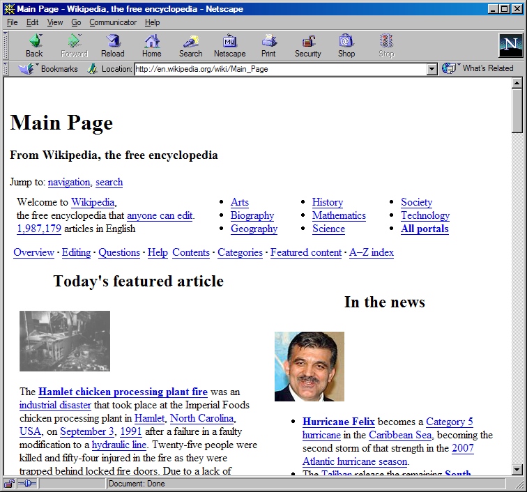
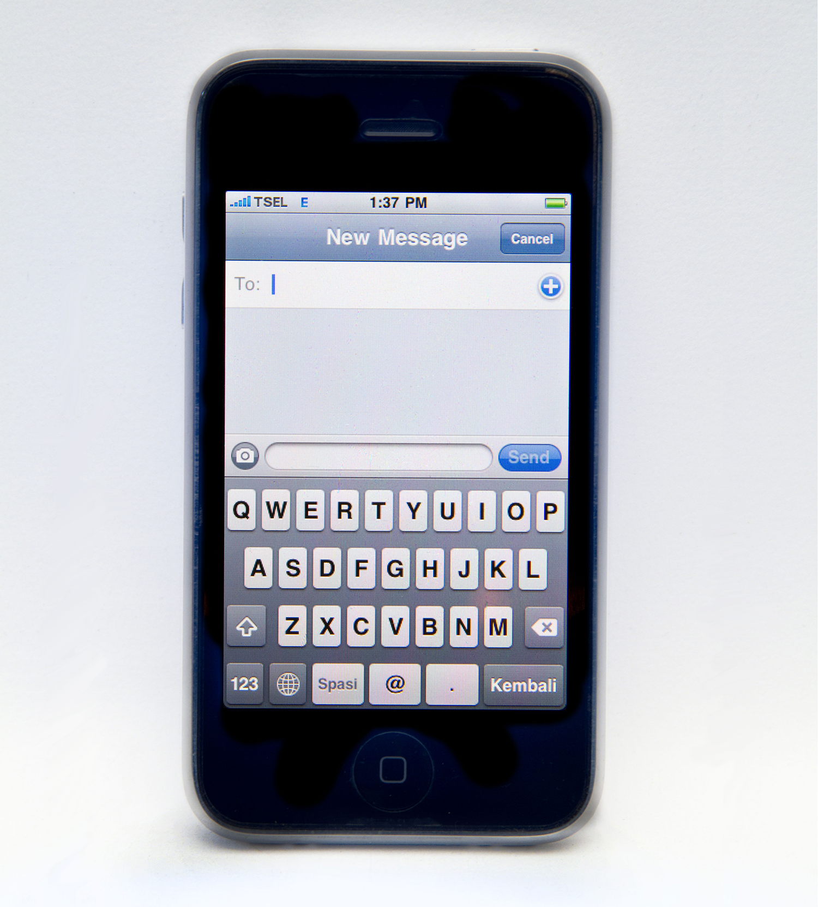
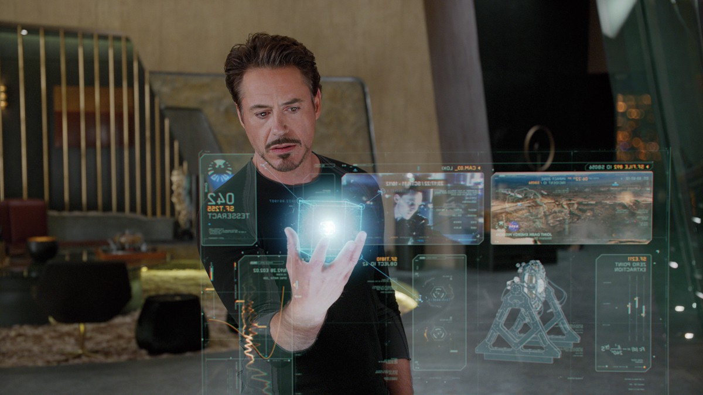

Interfaces of the Future
And how to hack around
with them now
Peter O'Shaughnessy | @poshaughnessy | Press f for full screen, h for high contrast


The Desktop Era (1993-)
The Smartphone Era (2007-)
The Multi-Device Era (2010-)
What's next?
Smartwatches?

Smartglasses?


Augmented Reality & Holographics
2015

2019?
Virtual Reality

2015
Presence

All in the last few weeks:
Browsers implementing:
- Device discovery
- Full screen extensions
- Sensor integration, e.g. orientation
- Rendering for different hardware
“WebVR”
- "Version Zero"
- Not even in alpha channels yet
WebGL

WebGL

CSS 3D

Code
Warning: APIs will change
if( navigator.getVRDevices ) {
// Chrome
navigator.getVRDevices().then( vrDeviceCallback );
} else if( navigator.mozGetVRDevices ) {
// Firefox
navigator.mozGetVRDevices( vrDeviceCallback );
}
function vrDeviceCallback( vrDevices ) {
for( var i=0; i < vrDevices.length; i++ ) {
// If instance of HMDVRDevice...
// If instance of PositionSensorVRDevice...
}
}var leftFOV =
vrHMD.getRecommendedEyeFieldOfView('left');
var leftTrans = vrHMD.getEyeTranslation('left');
if( container.webkitRequestFullscreen ) {
container.webkitRequestFullscreen({
vrDisplay: hmdDevice });
} else if (canvas.mozRequestFullScreen) {
container.mozRequestFullScreen({
vrDisplay: hmdDevice });
}